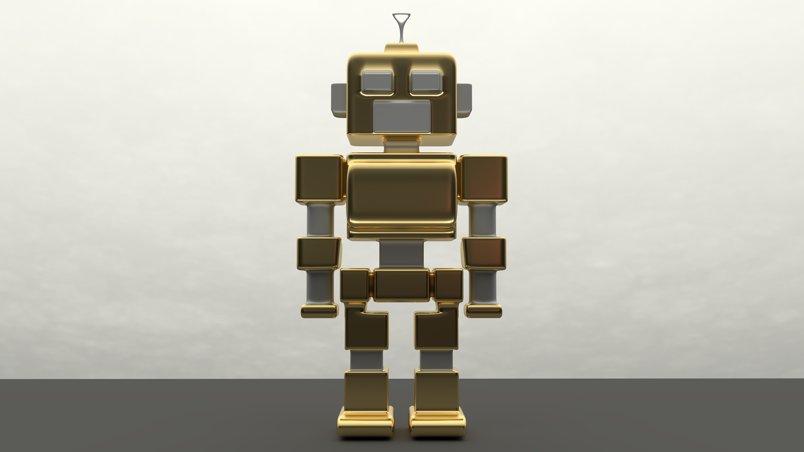
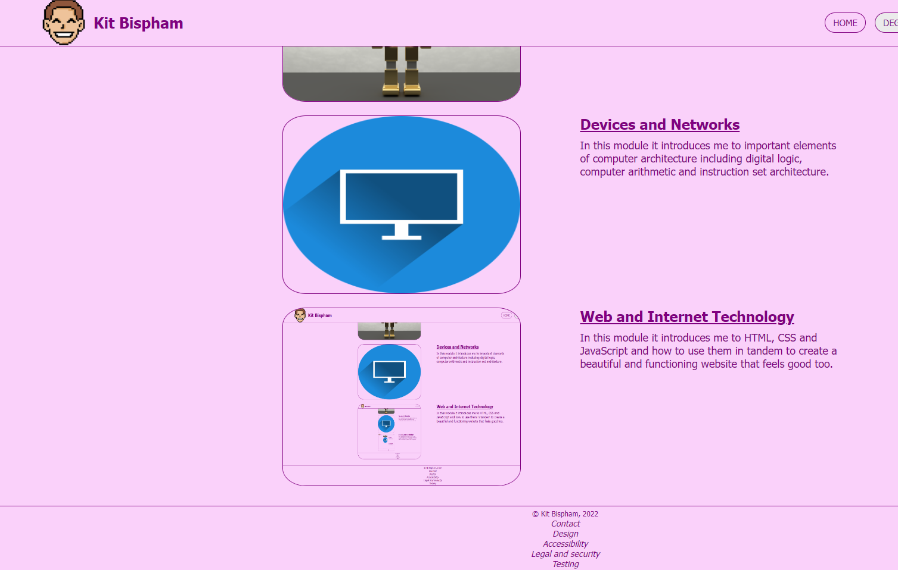

In this module it introduces me to Software Engineering concepts that are needed to develop software systems for a given problem.
It covers the main steps in the process of developing such systems, from requirements analysis through to their implementation and testing.
A major part of this module is the group project where we in teams to develop a web-based system, which gives us experience in teamwork and managing projects.
Foundations of Computer Science
In this module it introduces me to the funimental ideas that make up Computer Science. Giving me the understanding about logical consepts like propositional logic,
set theory, predicate logic, boolean algebra and functions. This helps me think in a logical way to solve a problem.
Java Programming
In this module it introduces me to the programming language of Java. With weekly exercises and multiple assignments we learn the object-oriented language.

Machines and Intelligence
In this module it introduces me to the history and consepts of Intelligence. We look at how AI has evolved through the years and the different models AI uses.
Devices and Networks
In this module it introduces me to important elements of computer architecture including digital logic, computer arithmetic and instruction set architecture.

Web and Internet Technology
In this module it introduces me to HTML, CSS and JavaScript and how to use them in tandem to create a beautiful and functioning website that feels good too.